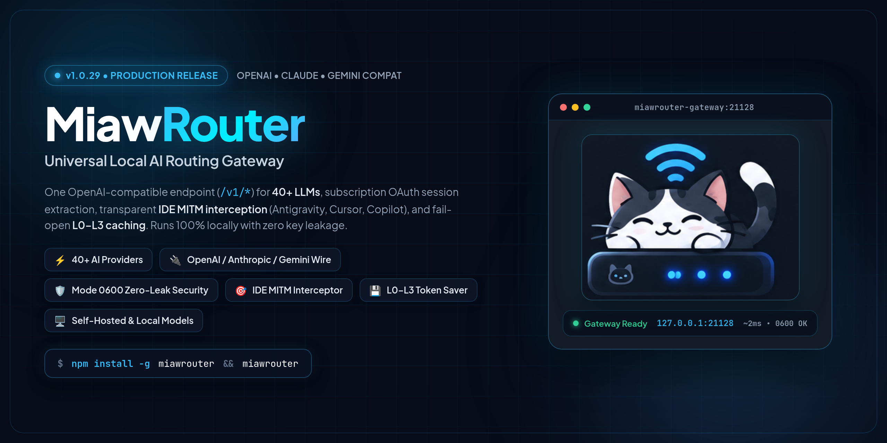

Gateway
127.0.0.1:21128
Gateway
127.0.0.1:21128
Provider adapters
One request shape across configured backends
The current MiawLabs reference tracks 146 adapters for cloud APIs, subscription-backed sessions, and local runtimes.
MiawRouter runs locally and presents one OpenAI-compatible endpoint to editors, agents, and applications.
It handles provider translation, multi-account failover, SSE normalization, cache layers, MITM interception, and local model connectors.
The default dashboard and API endpoint are available after the service starts.
npm install -g miawrouter
miawrouter
# OpenAI-compatible base URL
http://127.0.0.1:21128/v1http://127.0.0.1:21128/v1http://127.0.0.1:21128/dashboard~/.miawrouterThe current MiawLabs reference tracks 146 adapters for cloud APIs, subscription-backed sessions, and local runtimes.
Provider-specific streams are translated into a consistent OpenAI-compatible response.
Round-robin selection and cooldown handling move traffic away from unavailable accounts.
L0 through L3 reduce repeated prompt work while keeping fail-open behavior.
Compatible developer tools can route requests through the local gateway without changing their normal workflow.
Connectors cover llama.cpp, vLLM, Whisper, Kokoro, and other self-hosted services.

curl http://127.0.0.1:21128/v1/chat/completions \
-H "Content-Type: application/json" \
-H "Authorization: Bearer local" \
-d '{
"model": "your-model-route",
"messages": [{"role": "user", "content": "Hello"}]
}'21128~/.miawrouter